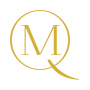
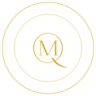
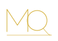

Tres propuestas para elegir. Cada una se muestra en oro, en marfil (una sola tinta), en negro sobre claro, a 32 y 16 px y en versión horizontal. El favicon usa trazos más gruesos porque los trazos finos desaparecen a ese tamaño.

Una M de alto contraste (trazos gruesos y finos, como una tipografía Didot) dentro de la Q. La cola de la Q sale del círculo en un trazo que se afina. Es la más clásica, con aire de casa de moda.

El monograma A rodeado por dos anillos, con el nombre escrito alrededor. Sirve para usos grandes (sello, redes, packaging). En tamaños pequeños se usaría el monograma A solo.

M y Q enlazadas con un solo trazo fino. La cola de la Q se alarga y hace de línea base bajo la M, como una firma. Es la más arquitectónica y la más cercana al logo actual.